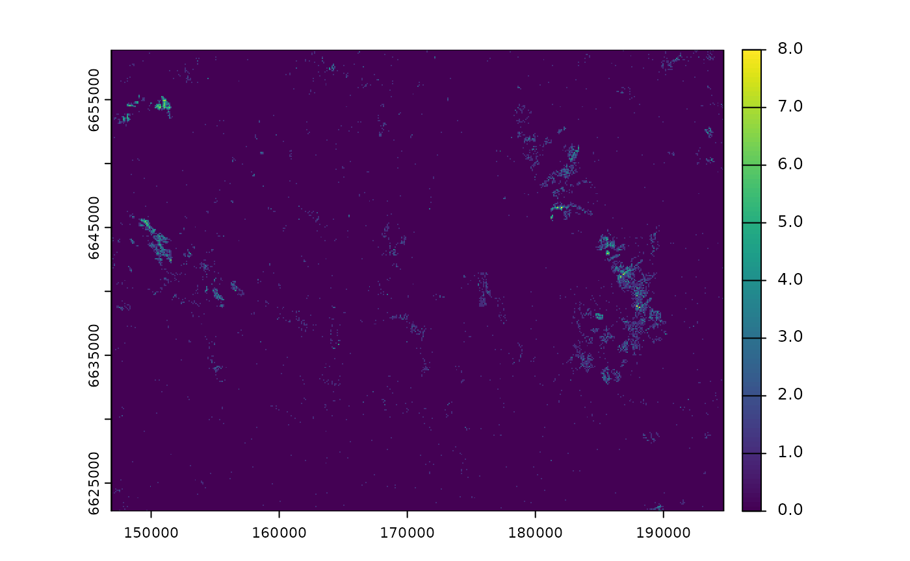
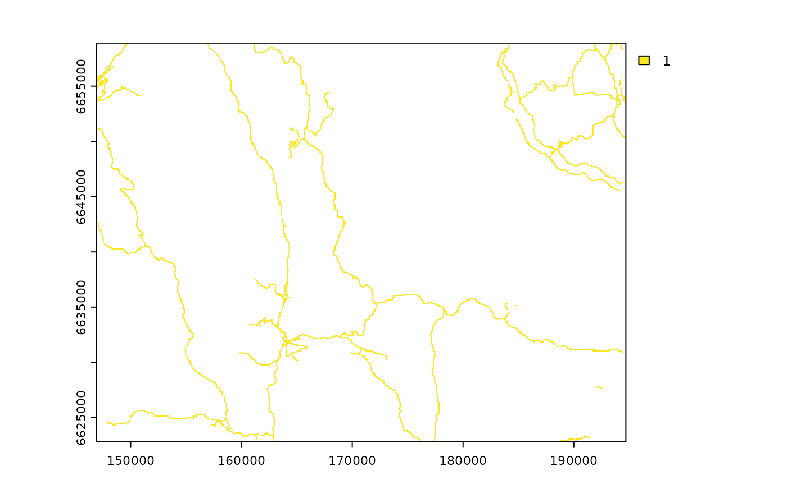

Computing zones of influence for different types of variable
Source:vignettes/computing_zoi.Rmd
computing_zoi.RmdZones of influence (ZoI) represent how the influence of anthropogenic infrastructure or disturbance spreads in space. When there are multiple features of a given type of infrastructure or disturbance in a landscape, oneimpact allows the computation of two metrics to represent the zone of influence: the ZoI of the nearest feature, which accounts only for the influence of the feature nearest to each site in space; and the cumulative ZoI of multiple features, which account for the sum of the influence of nearby features. Zones of influence can be computed for different types of variable, represented as points (e.g. houses, tourist cabins, wind turbines), lines (e.g. roads, railways, power lines), or polygons (e.g. mines, urban areas, agricultural areas or polygons of any land use type). Here we provide examples of computation of the ZoI metrics for point and linear infrastructure, and we explain a few technical details that must be dealt with for the correct creation of input raster maps and the calculation of the ZoI. Along this vignette we refer mostly to anthropogenic infrastructure, but the same might be applied to anthropogenic disturbance, land cover types, or most spatial and landscape variables that can be discretized.
Preparing the input data
ZoI metrics in oneimpact use raster data as input, i.e. matrix representations of where the infrastructure or disturbance sources are located. In these input raster maps, each cell or pixel represents if there are infrastructure and possibly the number of infrastructure in each site within the landscape. Both raster maps from the raster or the terra package can be used as input for the ZoI calculation. We start by showing the preparation of input maps for two types of infrastructure: private tourist cabins and main roads, using a sample landscape from Southern Norway.
Loading the data
Let’s say our infrastructure data is in vector format, as it is common for maps of this type. We’ll load the two vector data sets from the oneimpact package, then rasterize it to be able to compute the ZoI metrics. Both loading and rasterizing maps can be accomplished e.g. with the package terra.
# Load cabins vector data
f <- system.file("vector/sample_area_cabins.gpkg", package = "oneimpact")
cabins_vect <- terra::vect(f)
cabins_vect
#> class : SpatVector
#> geometry : points
#> dimensions : 6875, 4 (geometries, attributes)
#> extent : 146900.1, 194694.6, 6622822, 6658891 (xmin, xmax, ymin, ymax)
#> source : sample_area_cabins.gpkg
#> coord. ref. : ETRS89 / UTM zone 33N (EPSG:25833)
#> names : cat buildtype city value
#> type : <int> <chr> <int> <int>
#> values : 1 161 604 1
#> 2 161 604 1
#> 3 161 604 1We see the cabins data set present 6875 cabins spread in the sample landscape used here. The data set has information for the type of building and municipality where each feature is located. We can visualize the cabins to have an idea of how they are distributed:
plot(cabins_vect, cex = 0.5)We can now load the road data for the same area.
# Load roads vector data
f2 <- system.file("vector/sample_area_roads.gpkg", package = "oneimpact")
roads_vect <- terra::vect(f2)
roads_vect
#> class : SpatVector
#> geometry : lines
#> dimensions : 1880, 5 (geometries, attributes)
#> extent : 146910, 194629.8, 6622803, 6658865 (xmin, xmax, ymin, ymax)
#> source : sample_area_roads.gpkg
#> coord. ref. : ETRS89 / UTM zone 33N (EPSG:25833)
#> names : id name publ_priv traffic_bin value
#> type : <int> <chr> <chr> <chr> <num>
#> values : 0 "Jondalsveien" publ high 1
#> 0 "Jondalsveien" publ high 1
#> 0 "Jondalsveien" publ high 1We see the data set comprises 1880 road segments of different sizes, each of which is also classified according to the road name, whether the road is public or private, and if the road traffic is high or low.
Now we plot the roads data set:
plot(roads_vect)Rasterizing the data
Producing the input raster in an important step to correctly characterize the zone of influence. What we want to produce here are maps that best represent how infrastructure is distributed in space. To this end, it is important to pay attention to what is the resolution (pixel size) of the raster map to be produced. There are two main cases that must highlighted:
- If the resolution if fine enough that only one feature is located or crosses each pixel (small pixels compared to the size of infrastructure features), the input raster might be set as a binary variable, where value 1 represent the presence of infrastructure or disturbance and 0 (or
NA) represent its absence.
- If the resolution is rougher so that several infrastructure or disturbance sources might be found within the same pixel (larger pixels compared to the size of infrastructure features), the input raster should be set as a count of features within each pixel.
Here we will follow these different approaches for different types of infrastructure. To have a basis for rasterization, we load the raster maps of cabins in the study area. We do not use it directly though; we just use it to define the resolution of the output raster maps in the rasterization process.
# Load vase raster data
f <- system.file("raster/sample_area_cabins.tif", package = "oneimpact")
r <- terra::rast(f)Input rasters for point data
In our example of point data, the cabins data set, there are regions in the sample landscape in which more than one cabins can be found. In this context, two input raster may be prepared: either a binary map showing if cabins are present or not, or a map showing the number of cabins per pixel. Which input map should be used depends on the ecological indicator being assessed and the hypotheses around it. As illustration, we’ll compute here a map representing the count of cabins. We’ll rasterize the vector map using the function rasterize from the terra package, filling the information in each pixel with the count of features within them (function fun = length). We also fill the background areas (pixels with no cabins) with value zero, since that is not default in the rasterize function.
# rasterize cabins counting the number of features in each pixel
cabins <- terra::rasterize(cabins_vect, r, fun = length)
# fill background as zero
values(cabins)[is.na(values(cabins))] <- 0
# output
cabins
#> class : SpatRaster
#> dimensions : 361, 478, 1 (nrow, ncol, nlyr)
#> resolution : 100, 100 (x, y)
#> extent : 146900, 194700, 6622800, 6658900 (xmin, xmax, ymin, ymax)
#> coord. ref. : +proj=utm +zone=33 +ellps=GRS80 +towgs84=0,0,0,0,0,0,0 +units=m +no_defs
#> source : memory
#> name : cabins
#> min value : 0
#> max value : 8Now we plot the map to visualize the result:
plot(cabins)
Input rasters for linear data
For linear infrastructure or disturbance, the same reasoning can be applied. However, it is maybe less common to have multiple roads or railways in a single pixel, unless the is a crossroad of several features or the pixel size is large. In this case, then, we create a binary input raster, where 1 represents the presence of roads and NA represent the absence of roads in the pixel.
# rasterize roads into a binary map 1/NA
roads <- terra::rasterize(roads_vect, r)
# output
roads
#> class : SpatRaster
#> dimensions : 361, 478, 1 (nrow, ncol, nlyr)
#> resolution : 100, 100 (x, y)
#> extent : 146900, 194700, 6622800, 6658900 (xmin, xmax, ymin, ymax)
#> coord. ref. : +proj=utm +zone=33 +ellps=GRS80 +towgs84=0,0,0,0,0,0,0 +units=m +no_defs
#> source : memory
#> name : layer
#> min value : 1
#> max value : 1Now we plot the map to visualize the result:
plot(roads)
Note that here we did not fill the background of the map (areas without roads) with zero but kept the NA values. We did so on purpose to illustrate the use of the zeroAsNA parameter when computing the ZoI below.
Input rasters for polygon data
For infrastructure, disturbance, or spatial variables represented as polygons or areas, one can use the same approach as for linear data. If we have a vector of urban areas, for instance, they might be rasterized into binary raster with 1-0 or 1-NA values. If we already have a rastr map (e.g. a land use or land cover map), specific classes can be separated into dummy variables representing the presence/absence of the class in each pixel.
Computing the ZoI
To compute the ZoI, we’ll use the calc_zoi function from the oneimpact package. calc_zoi might accommodate the calculation of both the ZoI of the nearest feature (when the parameter zoi_metric is "nearest") and the cumulative ZoI of multiple features (when zoi_metric = "cumulative"), or both (the default, if zoi_metric = "all"). It is also possible to control the shape and the radius of the ZoI through the parameters type and radius, respectively.
Point infrastructure
First we compute the zone of influence variables for our point example data, the cabins data set. We use an exponential decay ZoI with radii of 500 and 1000 m. Since the background of the input map is 0, we set the parameter zeroAsNA = TRUE (default), which means we do need to treat background zero values as NA:
# compute both Zoi metrics with exponential decay, radius = 500 and 1000 m
# since the background is NA, we use zeroAsNA = FALSE
zoi_cabins <- calc_zoi(cabins,
radius = c(500, 1000),
type = "exp_decay",
zeroAsNA = TRUE)
# check
zoi_cabins
#> class : SpatRaster
#> dimensions : 361, 478, 4 (nrow, ncol, nlyr)
#> resolution : 100, 100 (x, y)
#> extent : 146900, 194700, 6622800, 6658900 (xmin, xmax, ymin, ymax)
#> coord. ref. : +proj=utm +zone=33 +ellps=GRS80 +towgs84=0,0,0,0,0,0,0 +units=m +no_defs
#> sources : memory (2 layers)
#> memory
#> memory
#> names : zoi_nea~ecay500, zoi_nea~cay1000, zoi_cum~ecay500, zoi_cum~cay1000
#> min values : 1.460438e-09, 3.821568e-05, 0.00000, 0.0000
#> max values : 1.000000e+00, 1.000000e+00, 51.57446, 112.6539Since we opted to compute both ZoI metrics (zoi_metric = "all" by default, if nothing else is specified) using two different radii, the resulting raster is composed of layers. Below we plot these layers to visualize the different spatial patterns:
# plot
plot(zoi_cabins)The figure shows the two measures of the ZoI of the nearest feature in the row above (for radius = 500 and 1000 m) and the two measures of the cumulative ZoI below. Note that, while both ZoI metrics equivalently represent the influence of the infrastructure in its surroudings, each metric has a slightly different interpretation:
- The ZoI of the nearest feature varies between 0 and 1, and represents the decay in the influence of the cabins with distance, accounting only for the nearest one. In this context, it does not matter if the cabins are clustered or isolated in space.
- The cumulative ZoI corresponds to a (exponentially-weighted) count of cabins within 500 m and 1000 m radii, being a measure of the number of cabins affecting a given site. Therefore, this metric can reach much higher values than 1.
Linear infrastructure
Now we compute the zone of influence variables for our linear example data, the roads data set. We again use an exponential decay ZoI with radii of 1000 and 2000 m. Since the background of the input map is NA, we now need to set the parameter zeroAsNA = FALSE:
# compute both Zoi metrics with Gaussian decay, radius = 500 and 1000 m
# since the background is NA, we use zeroAsNA = FALSE
zoi_roads <- calc_zoi(roads,
radius = c(500, 1000),
type = "exp_decay",
zeroAsNA = FALSE)
# check
zoi_roads
#> class : SpatRaster
#> dimensions : 361, 478, 4 (nrow, ncol, nlyr)
#> resolution : 100, 100 (x, y)
#> extent : 146900, 194700, 6622800, 6658900 (xmin, xmax, ymin, ymax)
#> coord. ref. : +proj=utm +zone=33 +ellps=GRS80 +towgs84=0,0,0,0,0,0,0 +units=m +no_defs
#> sources : memory (2 layers)
#> memory
#> memory
#> names : zoi_nea~ecay500, zoi_nea~cay1000, zoi_cum~ecay500, zoi_cum~cay1000
#> min values : 2.151268e-24, 1.46672e-12, 0.00000, 0.00000
#> max values : 1.000000e+00, 1.00000e+00, 11.56858, 28.16008We again have four layers representing the two ZoI metrics for roads for the different radii:
# plot
plot(zoi_roads)
Here the ZoI of the nearest feature has a similar interpretation to the point data example. The ZoI in a given site represents the influence of the nearest road segment, which decay with the distance to this road segment.
In contrast, the cumulative ZoI now does not represent the number of different roads in a neighborhood, but the number of pixels of roads (i.e., proportional to the road length) within a given neighborhood. For the ZoI of 1000 m-radius, for instance, a site with a cumulative ZoI of 40 means that there are 40 pixels of roads in a circle of 1000 m radius around this site (but remember this is not a simple count but an exponentially-weighted count of the number of road pixels). If multiplied by the pixel size and divided by the size of the neighborhood (\(\pi \cdot r^2\)), the cumulative ZoI metric represents the exponentially-weighted density of roads at 1000 m scale.
Some technical remarks
For all types of infrastructure and spatial variable, we recommend users to think before computing and modeling about which are the type of influence measure they wish to represent. Some remarks are made below:
Think what is relevant for your ecological system and question
ZoI metrics must be computed according to the ecological system and ecological indicators, to the research or assessment questions and their hypotheses, as well as to the type of data these measures of zones of influence will be associated to.
Choose well the pixel size and how to represent infrastructure
The representation of infrastructure in raster format, as input for the computation of ZoI metrics, must take into account what is the resolution of the data. For very fine resolution maps (small pixel size), input infrastructure raster maps might be binary, with each pixel representing a feature or feature segment. For large areas, though, the computation of ZoI metrics might be computationally and time consuming (but see the alternative computation in GRASS GIS for these cases!). In contrast, as the input maps have a rougher resolution (larger pixel size), one must think if the input infrastructure raster maps should be binary or represent counts of infrastructure features.
Choose well the values for the radius of the ZoI
The extent of the study area and the ZoIs to be evaluated must be carefully selected when they are used to annotate ecological data and assess cumulative impacts on species or ecological processes (Jackson & Fahrig, 2015).
First, the impact of infrastructure on ecological processes might differ depending of the extent of the study area (Vistnes & Nellemann, 2008). Skarin & ̊Ahman (2014) showed that, depending of the temporal and spatial range of the study, the same type of infrastructure might vary in their effect on biological response variables, from no effect to positive or negative effects. Second, depending on the response variable, the range of ZoI radii evaluated should encompass at least the range size or the average dispersal distance of the species under study (Jackson & Fahrig, 2012). This is needed to ensure that the “true” ZoI at which the ecological process being measured is affected is included among the possible ZoI, and avoid that conclusions based on an estimated ZoI that is wrong mislead management and conservation policies based on that scientific inference (e.g. Jackson & Fahrig, 2015).
References
Jackson, H. B., & Fahrig, L. (2012). What size is a biologically relevant landscape? Landscape Ecology, 27(7), 929–941.
Jackson, H. B., & Fahrig, L. (2015). Are ecologists conducting research at the optimal scale? Global Ecology and Biogeography, 24(1), 52–63.
Skarin, A., & Åhman, B. (2014). Do human activity and infrastructure disturb domesticated reindeer? The need for the reindeer’s perspective. Polar Biology, 37(7), 1041–1054.
Vistnes, I., & Nellemann, C. (2008). The matter of spatial and temporal scales: A review of reindeer and caribou response to human activity. Polar Biology, 31(4), 399–407.